GingerResources
Explore free photography presets, textures, fonts and quick guides — crafted for travel & street creators.


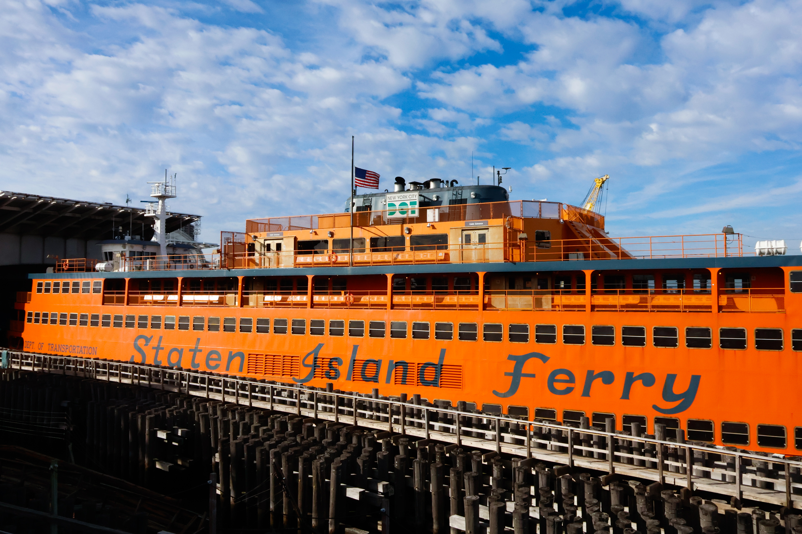
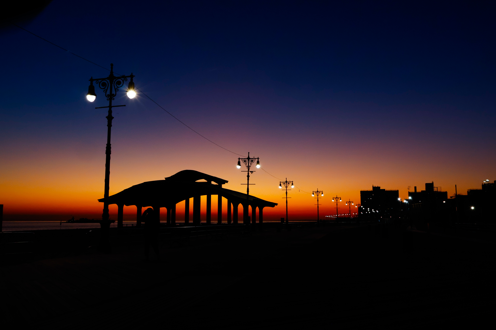
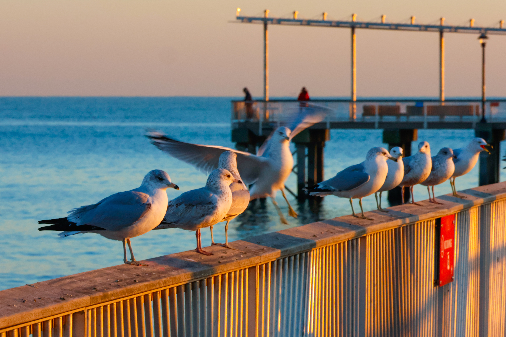
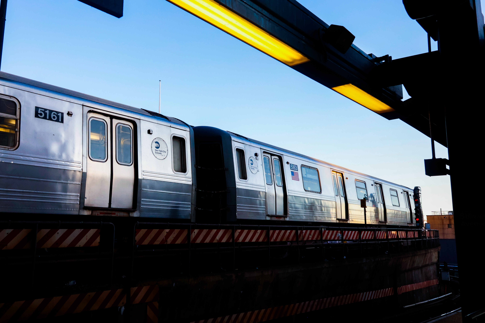
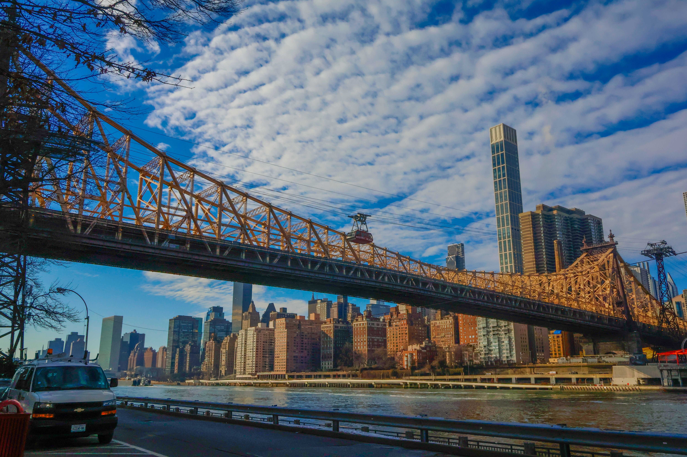
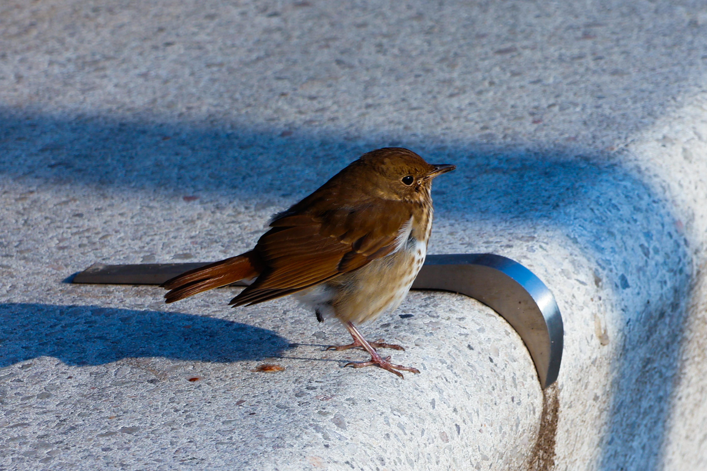
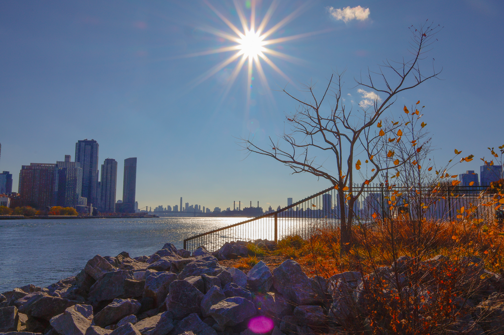
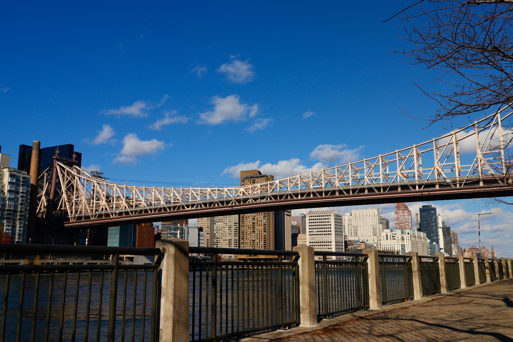
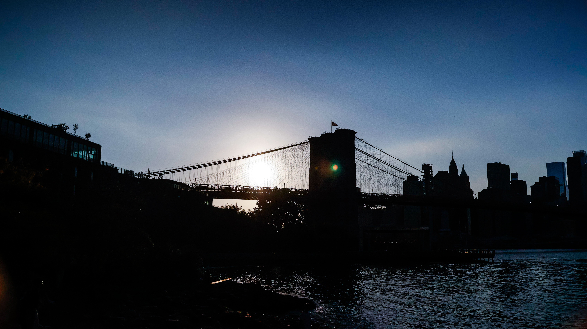
central-park-10-3-2024/central-park-10-3-2024-4.JPG)
central-park-10-3-2024/central-park-10-3-2024-3.JPG)
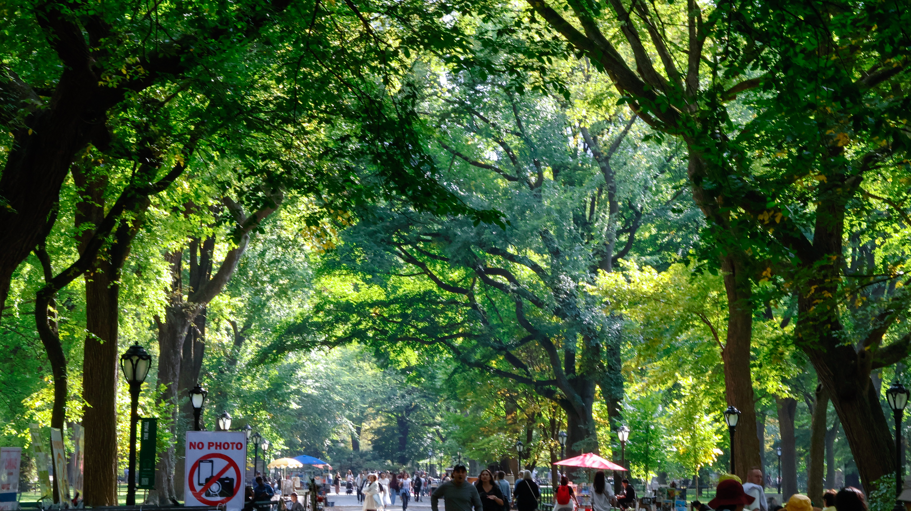
garden-08-21-2024/garden-08-21-2024-6.JPG)
{kind=link}
{kind=link}
{kind=link}
{kind=link}
{kind=link}
{kind=link}
{kind=link}
{kind=link}
{kind=link}
{kind=link}
ferry-12-31-2024/ferry-12-31-2024-4.JPG){kind=link}
ferry-12-31-2024/ferry-12-31-2024-3.JPG){kind=link}
ferry-12-31-2024/ferry-12-31-2024-2.JPG){kind=link}
ferry-12-31-2024/ferry-12-31-2024-1.JPG){kind=link}
roosevelt-island-12-27-2024/roosevelt-island-12-27-2024-5.JPG){kind=link}
roosevelt-island-12-27-2024/roosevelt-island-12-27-2024-4.JPG){kind=link}
roosevelt-island-12-27-2024/roosevelt-island-12-27-2024-3.JPG){kind=link}
roosevelt-island-12-27-2024/roosevelt-island-12-27-2024-2.JPG){kind=link}
roosevelt-island-12-27-2024/roosevelt-island-12-27-2024-1.JPG){kind=link}
central-park-12-24-2024/central-park-12-24-2024-3.JPG){kind=link}
central-park-12-24-2024/central-park-12-24-2024-2.JPG){kind=link}
central-park-12-24-2024/central-park-12-24-2024-1.JPG){kind=link}
roosevelt-island-12-01-2024/roosevelt-island-12-01-2024-6.JPG){kind=link}
roosevelt-island-12-01-2024/roosevelt-island-12-01-2024-5.JPG){kind=link}
roosevelt-island-12-01-2024/roosevelt-island-12-01-2024-4.JPG){kind=link}
roosevelt-island-12-01-2024/roosevelt-island-12-01-2024-3.JPG){kind=link}
roosevelt-island-12-01-2024/roosevelt-island-12-01-2024-2.JPG){kind=link}
roosevelt-island-12-01-2024/roosevelt-island-12-01-2024-1.JPG){kind=link}
central-park-10-3-2024/central-park-10-3-2024-6.JPG){kind=link}
central-park-10-3-2024/central-park-10-3-2024-5.JPG){kind=link}
central-park-10-3-2024/central-park-10-3-2024-2.JPG){kind=link}
central-park-10-3-2024/central-park-10-3-2024-1.JPG){kind=link}
garden-08-21-2024/garden-08-21-2024-5.JPG)
garden-08-21-2024/garden-08-21-2024-4.JPG)
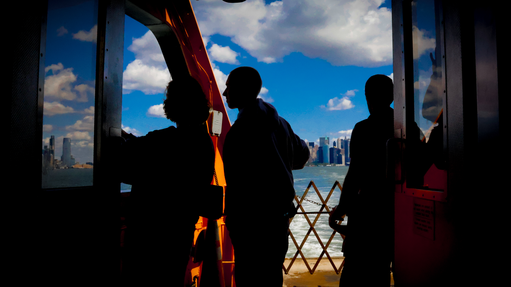
garden-08-21-2024/garden-08-21-2024-2.JPG){kind=link}
garden-08-21-2024/garden-08-21-2024-3.JPG)
garden-08-21-2024/garden-08-21-2024-1.JPG){kind=link}